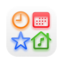

本指南可帮助用户解决常见问题并提出建议。
Forest 链接功能
通过 Forest 账户链接功能，您可以在手机上与 Forest 同步数据。同步数据包括以下内容：
同步过程将自动进行，数据将在每个专注结束时同步。如果同步出现临时问题，最多可临时保存 5 条同步专注记录。
【注意 I】同步专注时钟的记录时间为 15 ~ 180 分钟，并且是 5 的倍数。例如，24 分钟的时钟会同步到 20 分钟，而 10 分钟的时钟则不会同步。
【注意 II】如果 Forest 账户同步功能已打开，则无法在 Mac 上编辑 Focus Clock 的标签列表。要编辑标签列表，请在手机的 Forest 中编辑，然后进行同步。
【注意 III】此应用程序中的专注时间不属于 Forest 中 "深度专注" 时间的一部分。您可以在 "森林" 选项卡中查看专注记录，但这些记录不会记录在 "专注排行榜" 中。
TRIStudio 客户支持
tri.studio@outlook.com
5 个工作日内回复